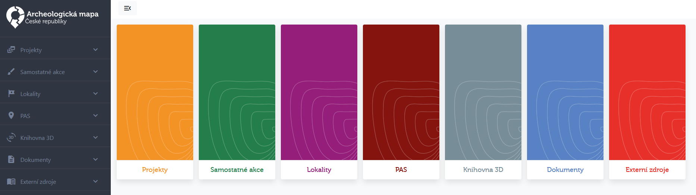
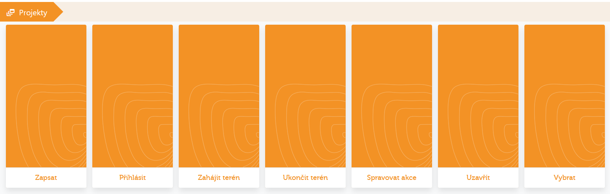
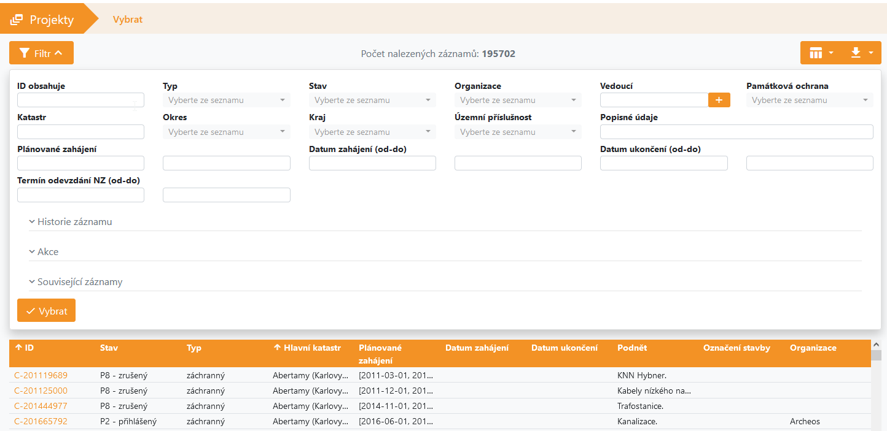
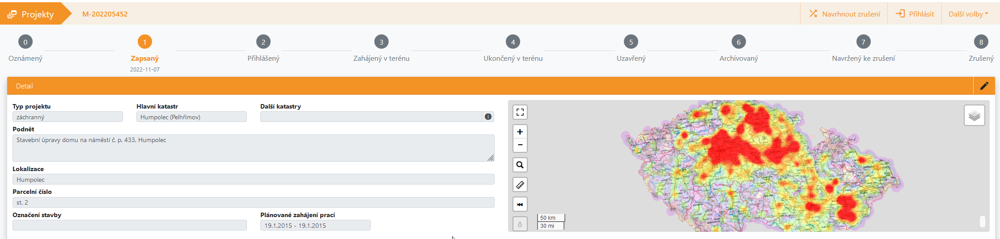
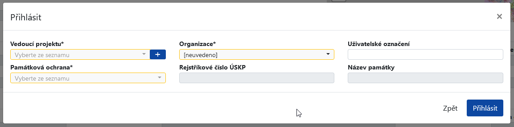

Webová aplikace
Obecný popis vzhledu a fungování webové aplikace AMČR
Do aplikace AMČR vstoupíte na adrese https://amcr.aiscr.cz/.
Webové rozhraní aplikace AMČR do vysoké míry kopíruje vzhled původního desktopového klienta. Na úvodní stránce po přihlášení se zobrazí karty pro jednotlivé části, které jsou přihlášenému uživateli dostupné dle jeho uživatelské role. Jednotlivé části AMČR jsou barevně odlišeny a daná barevnost je pak dodržena i při vstupu do konkrétní části, na první pohled je tedy zřejmé, kde se uživatel nachází.

Vlevo v horní liště aplikace jsou informace o přihlášeném uživateli, odpočet, za jak dlouho dojde k automatickému odhlášení, pod tlačítkem Uživatel vstup do správy uživatelského účtu, možnost odhlášení z aplikace a přepínání mezi jazykovými verzemi (anglická jazyková verze zatím není k dispozici).
Správa uživatelského účtu
Ve správě uživatelského účtu lze provést změnu hesla, prohlížet historii přihlášení a změn rolí a oprávnění uživatelského účtu. V nabídkách Nastavení emailových notifikací a Upozornění na projekty pak lze nastavit emailová upozornění, která bude uživatel ze systému automaticky dostávat. V případě projektů lze nově volit mezi emailovými notifikacemi na projekty zapsané v celém kraji, dílčím okrese, či jednotlivých katastrálních územích.
Rozcestníky jednotlivých částí
Úvodní obrazovka každé z částí aplikace nabízí rozcestník, který zpravidla obsahuje následující karty (dle uživatelské role):
Zapsat– Umožňuje zápis nového záznamu dané kategorie.Vybrat– Nabízí výpis všech záznamů v dané kategorie a především jejich filtraci pomocí široké škály kritérií.Moje záznamy– Přednastavená filtrace, která zobrazuje jen záznamy zapsané přihlášeným uživatelem.Naše záznamy– Přednastavená filtrace, která zobrazuje záznamy vytvořené všemi uživateli stejné organizace jako je organizace přihlášeného uživatele.
V případě Projektů pak karty obsahují další přednastavené filtrace, které vedou k projektům v daných procesních stavech.

Výběr a filtrace záznamů
Karta Vyber obsahuje tabulku všech záznamů ve zvolené kategorii. Pomocí tlačítka Filtr je možné v záznamech pomocí široké škály kritérií filtrovat. Některá z polí filtrace obsahují rozbalovací nabídky s položkami heslářů, ve kterých lze zpravidla vybrat více než jednu možnost. Tabulku se seznamem záznamů lze pak pomocí tlačítka Export výběru v horní liště vpravo exportovat do souborů formátů .csv, .json a .xlsx. Po kliknutí na identifikátor konkrétního záznamu v tabulce přejde aplikace na daný záznam. Výhodou práce v prohlížeči je možnost otevřít takových záznamů více na nových kartách (případně v nových oknech) prohlížeče a operativně se pak vrátit k seznamu s již vyfiltrovanými záznamy.

Detail konkrétního záznamu
Okno aplikace s konkrétním záznamem vždy v horní liště obsahuje identifikátor daného záznamu. Pod ním se nachází pruh s jednotlivými procesními stavy daného záznamu. Aktuální procesní stav je vždy zvýrazněn barvou dle dané části AMČR a pod ukazateli procesních stavů, kterými již záznam prošel, je datum, kdy k poslední změně daného stavu došlo. V horní liště záznamu jsou pak tlačítka umožňující právě přechody mezi jednotlivými procesními stavy. Tato tlačítka závisí na kontextu a roli přihlášeného uživatele. V nabídce Další volby lze zobrazit historii daného záznamu, přejít na daný záznam (došlo již k jeho archivaci) v Digitálním archivu AMČR a AMČR API a případně stáhnout metadata daného záznamu ve formátu .xml.
Úpravy jednotlivých sekcí na stránce daného záznamu lze povolit pomocí ikony tužky v pravém horním rohu dané sekce. Po povolení úprav se zobrazí konkrétní upravovaná sekce daného záznamu, kdy pole ohraničená žlutě je v daném procesním stavu povinné vyplnit.

Přechody mezi procesními stavy
Přechody mezi jednotlivými procesními stavy záznamů se dějí ve vyskakovacích oknech, která se nad záznamem objeví při vyvolání přechodu pomocí patřičného tlačítka v horní liště záznamu. Pole ohraničená žlutou barvou je nutné pro potvrzení přechodu do nového procesního stavu vyplnit.
